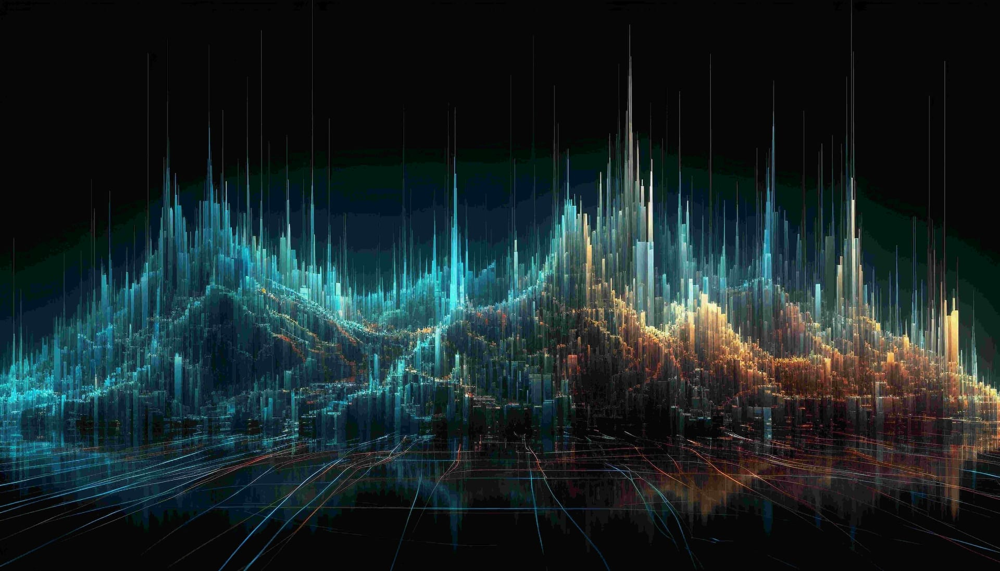

Skutečná hodnota vašich dat

Nová legislativa v Dánsku přiznává autorská práva k obličeji, tělu a hlasu jednotlivce, a reaguje tak na nárůst deepfake obsahu bez souhlasu dotčených osob. Nepřímo tím uznává, že k těmto údajům máte určité právo. Zároveň však každý váš klik, vyhledávání či zpráva systematicky doplňují reklamní profily, které datoví zprostředkovatelé prodávají korporacím, státním institucím i nebezpečným aktérům, často bez vašeho vědomí či souhlasu. Technologičtí giganti jako OpenAI nebo Meta dnes po těchto datech též sahají, aby na nich mohli trénovat miliardové jazykové modely. V prvním dílu této třídílné série se podíváme na to, proč jsou vaše informace tím nejcennějším, co vlastníte, a jak nad nimi znovu získat kontrolu.
Otisky prstů (dermatoglyfy) jsou považovány za jedinečné pro každého jednotlivce na této planetě. Ať už je to vlivem genetických či environmentálních faktorů, existuje jednoduše něco, co činí každý otisk, a každou sadu otisků, neopakovatelnou. Platí to dokonce i u jednovaječných dvojčat. Zdá se, že totéž lze říci i o lidském obličeji a lidském těle jako takovém.
Dánští zákonodárci s tímto pohledem zjevně souhlasí, a učinili pozoruhodný krok. V červnu 2025 oznámil dánský parlament novelu autorského zákona z roku 2014, kterou „vysílá jednoznačný signál, že každý má právo na své vlastní tělo, svůj hlas, a své obličejové rysy…“ (The Guardian, 27. 6. 2025). Jde o napříč politickým spektrem podporovanou iniciativu a legislativa by měla vstoupit v platnost do konce roku 2025.
Pokud pomineme nedávný (a naštěstí mrtvý odložený) návrh Chat Control 2.0, mohlo by se zdát, že dánská vláda má tentokrát skutečně dobré úmysly. Návrh zákona však není tak rozsáhlý, jak by se mohlo na první pohled zdát. Jeho hlavním cílem je boj proti nevyžádanému sdílení „realistických digitálních reprodukcí osobních charakteristik, jako jsou obličej, tělo či hlas“ (Culbert Ellis, 27. 8. 2025). Ano, deviantní jedinci si tak mohou nadále generovat pornografické materiály s kýmkoli chtějí, pokud je nebudou sdílet.
Zcela přirozeně jde o reakci na znepokojivý nárůst deepfake obsahu napříč celým internetem a zároveň o pokus právně postihnout skutečnou a úmyslnou dezinformaci (satira, parodie a karikatura zůstávají tímto zákonem nedotčeny). A abychom byli spravedliví, v této legislativě skutečně existuje něco pozitivního. Jen ne přímo v jejím textu, ale spíše mezi řádky. Vysvětlíme.
Jako analytici zpravodajských informací víme, že jakékoli informace se stávají daty ve chvíli, kdy je lze zaznamenat, zpracovat a analyzovat (a následně šířit či prakticky využít). Velikost vaší boty, strana postele, na které spíte, komu jste právě poslali peníze přes Revolut, jakými dopravními prostředky se pohybujete, které hospody navštěvujete, to vše jsou vaše osobní údaje. A vaše obličejové či tělesné rysy se v tomto ohledu nijak neliší.
Implicitním sdělením výše zmíněného zákona je, že k osobním údajům máte určité morálně-právní vlastnictví. Realita je však taková, že vaše data jsou každý den systematicky sbírána, analyzována, zneužívána a využívána k tvorbě státních i reklamních profilů. Vinou nezodpovědnosti, nebo prosté hlouposti, řady firem a institucí se tato data navíc již velmi pravděpodobně dostala do rukou různých nebezpečných aktérů prostřednictvím úniků a narušení databází. Od podvodníků až po sofistikované hackery. Můžete si to ostatně ověřit sami na https://haveibeenpwned.com/, nebo si u nás případně objednat analýzu digitální stopy, pokud máte pocit, že přeháníme.
Výše jsme zmínili reklamní profily (advertiser profiles). Až donedávna šlo pravděpodobně o nejvýnosnější způsob, jak vaše data zpeněžit. Právě o tom jsou ty všudypřítomné a nenáviděné cookies. Přispívají ke sběru dat, z nichž vzniká reklamní profil, který umožňuje doručit reklamu s co nejvyšší pravděpodobností úspěchu přímo na obrazovku vašeho počítače nebo telefonu. Tyto profily se obvykle skládají z celé řady zdrojů, od vaší historie vyhledávání na Googlu, přes data z chytrých hodinek, statistiky používání Spotify, streamovacích platforem a mnoha dalších. Je jich tolik, že je nelze ani vyjmenovat. A to by vás mělo znepokojovat.
Možná se ptáte: kdo vlastně tyto reklamní profily vytváří, a kdo dodává data? Jedno je naprosto jisté: kdokoli může vaše data prodat, tak téměř bezpochybně učiní. Stačí se podívat do obchodních podmínek služeb, které používáte, a webů, se kterými interagujete. Najdete tam bezpočet zmínek o tom, jak jsou vaše data zpracovávána a potenciálně prodávána. Tato data pak nakupují pochybné (a většinou mezinárodní) společnosti známé jako datoví makléři (data brokers). Ti sestavují profily a prodávají je nejvyššímu zájemci, zpravidla firmám, které vám následně zobrazují reklamu. Ne vždy však pouze jim. Státy a zpravodajské služby jsou rovněž známé tím, že si tato data v případě potřeby pořizují, bez ohledu na to, zda jsou vám či vaší zemi nakloněny. Datoví makléři tak nepředstavují jen hrozbu pro vaše soukromí, ale i pro vaši bezpečnost a bezpečnost státu jako takového.
S nástupem umělé inteligence se hodnota vašich dat ještě dramaticky zvýšila. Data jsou totiž naprosto klíčovým zdrojem pro trénink a neustálé zdokonalování velkých jazykových modelů (LLM), které firmám jako OpenAI, Google, či Meta vydělávají miliardy, na váš účet. Pokud jste s těmito společnostmi někdy sdíleli jakákoli data, s vysokou pravděpodobností byla použita právě k tomuto účelu. Ano, velmi pravděpodobně i vaše soukromé e-maily či zprávy.
My v CzechAlertu jsme přesvědčeni, že osobní data jsou vaším nejcennějším aktivem, a zároveň vaším největším bodem zranitelnosti. Pevně stojíme na straně digitálních práv a ochrany soukromí a považujeme za své poslání bojovat proti zneužívání osobních údajů běžných občanů. Možná se tedy ptáte: co se s tím vůbec dá dělat? Nezašel už tento systém krádeže dat příliš daleko?
Zaprvé vás vyzýváme, abyste svá data chránili stejně pečlivě jako své vlastní tělo, a abyste se vzdělávali v tom, jaká práva k nim máte a jakou mají skutečnou hodnotu. Tyto znalosti jsou užitečné dnes, a v nadcházejících letech budou ještě cennější. Zadruhé důrazně doporučujeme podniknout konkrétní kroky k posílení vašeho digitálního soukromí. A rádi vás k nim přizveme prostřednictvím našich poradenských služeb v oblasti ochrany soukromí.
A v neposlední řadě zůstaňte naladěni, toto je teprve první článek z naší třídílné série věnované osobním datům.
Buďte ve střehu.
Zdroje
- 1. https://www.culbertellis.com/news/combatting-deepfakes-denmark-implements-copyright-status-to-personal-likeness-0p2b4
- 2. https://databrokerswatch.org/
- 3. https://databrokerswatch.org/top-ten
- 4. https://gdpr-info.eu/
- 5. https://haveibeenpwned.com/
- 6. https://proton.me/blog/data-brokers
- 7. https://sites.usc.edu/iptls/2025/02/04/ai-copyright-and-the-law-the-ongoing-battle-over-intellectual-property-rights/
- 8. https://www.techpolicy.press/denmark-leads-eu-push-to-copyright-faces-in-fight-against-deepfakes/
- 9. https://thegoodlobby.eu/denmark-gives-everybody-the-right-to-their-own-body-facial-features-and-voice-to-counter-deepfakes/
- 10. https://www.theguardian.com/technology/2025/jun/27/deepfakes-denmark-copyright-law-artificial-intelligence
- 11. https://www.vox.com/technology/2023/7/27/23808499/ai-openai-google-meta-data-privacy-nope